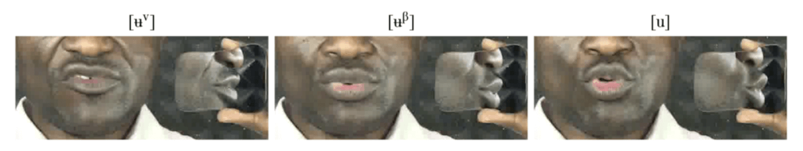

[verb]ing phonetics: workshop 2
Banto1d, 23 March 2022
Universität Hamburg
Matthew Faytak
Katie Franich
Overview
In this session:
- Beyond Praat: articulatory data
- Data management
- Using the data
- Open discussion period
Articulatory data
Acoustics vs. articulation
Acoustics gives us an indirect idea of the movements of the articulators
Sometimes, though, we need to look directly at the articulators
- If there are multiple explanations for acoustics
- If the examined sounds are totally unfamiliar or especially unusual
- In our context, this is fairly common
Lip articulation
Movement of tongue and lips: lips are easily seen moving
- Mirror at 45 degree angle provides a side view

Examples
Pius vowel photos

Palatographs
More complex, but provide information on tongue-palate contact Anderson (2008)
- stop and fricative place
- certain aspects of vowel articulation
Method
- paint tongue
- one token involving one lingual consonant
- open mouth, insert mirror, photograph

Examples
Kom high vowels (which I will be talking about in my regular talk)
- Kom iz vs. i
- Audio examples

Required equipment
Smartphone camera or handheld camera
Hand-held mirror (for lips) dental mirror (for palatography)
edible pigment (chocolate powder, edible charcoal) for palatography
Optional equipment
Phone tripod or camera tripod, to stabilize image
Photography light for better image quality
Good practice
Take more photographs than you think you’ll need
- Not all will be well-lit or at the right angle
- ???
Data management
Now what?
Suppose you have made a set of recordings onto your device. Now you should ensure that you don’t lose them
- You can skip this part for some amount of time, but you risk losing the data altogether
- Remembering the recordings is not a substitute for the recordings themselves
File backups
Back up every file in multiple locations if possible
- SD cards are an efficient way to do this
- Thumb drives are acceptable as well
- Multiple computers work (i.e. share with a colleague)
- Emailing to yourself works in a pinch
- Long-term cloud storage is ideal
File naming
Name your files according to the same logical pattern
- Date, language, topic
- Avoid duplicating names
To identify further details you should speak them during the recording itself
- Identify yourself
- Identify speaker if this is not sensitive information
- Give time, date, and location of recording
- Identify anyone else who may be heard in the recording (assistants, translators, etc.)
Tabular data
Structure of measures (formants, duration, f0, etc) is important
Store as tabular data (csv or txt)
- One observation per row
- One measure per column
- Name columns uniquely using the first row
- One or more columns should provide other required information (speaker’s ID, which segment or word the measure is from, experimental condition, etc)
Software
Manually building the tabular data in Excel is slow but works
Praat scripting can more quickly produce tabular data, but this is beyond the scope of this tutorial
- Google Sheets provides a free alternative (can download as .csv)
- Python and R are also usable for these purposes: free, but harder to learn
Using the data
Tabular data uses
Tabular data is more complicated: it’s a lot of text/numbers
- Provide summaries (averages, etc)
- Provide statistical analysis
- This is not practical for all attendees, but if working in a collaborative publication your collaborators may be able to provide
Statistics
Current research in phonetics mainly relies on statistical modeling and inference to argue points
- Because of the need to model the data, it’s important to have enough statistical power
- Need to ensure you have collected numerous repetitions of the phenomenon you’re after
- Need to ensure that enough speakers are recorded (the more the better)
- To get at the community average, instead of the idiosyncrasies of one speaker
Stats are hard, but…
Trying stats yourself
R is free software which is useful for statistical analysis
- Excel can also be used (though it’s not always so useful)
Simple plots can also be made in Excel and R
Conclusions
Open discussion
Some potential topics for discussion:
- How can we build capacity for this work in the continent’s universities?
- Can existing high-quality documentary work be used as a starting point?
- How can we valorize this work when students decide to pursue it?
- What should be the role of linguists off the continent in developing this work?
References
Anderson, V. (2008). Static palatography for language fieldwork. Language Documentation & Conservation, 2(1), 1-27. Article